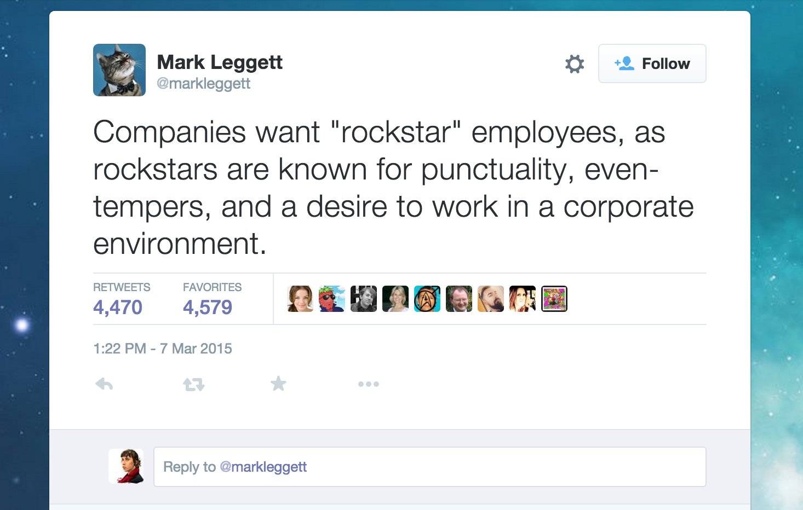

or, how to style an awesome checkbox with Sass
css & html!
"I don't have enough time"
"I don't have the energy"
"Maybe later, when I know more"
"Be Passionate! You have to live, breathe, and eat code"
Impostor Syndrome kicks in and you hope no one notices
Endless cycle of doing what someone else says you "should" and feeling frustrated/bored/burned out until you quit
Playful Exploration
Deliberate practice
Creative expression
codepen.io/tallys
css-tricks.com/emoji-toggles
Sibling Selectors ( ~ )
Pseudo-classes (:before, :after)
Checkbox states (applies to radio buttons too!)
CSS Kitty Toggle:
This will appear without Javascript!
.kitty-switch {
position: relative;
.well { // the label
cursor: pointer;
}
.toggle { // the checkbox
appearance: none;
background: transparent;
position: absolute;
width: 100%;
height: 100%;
cursor: pointer;
z-index: 100;
// "off"
~.kitty:before {
content: "emoji unicode";
position: absolute;
left: 0;
top: -15px;
font-size: 40px;
z-index: 1;
transition: 0.2s;
}
// "on"
&:checked {
~.emoji:before {
content: "emoji unicode";
left: 100%;
margin-left: -1em;
}
}
}
}
Natalya Shelburne / @natalyathree
#catscss